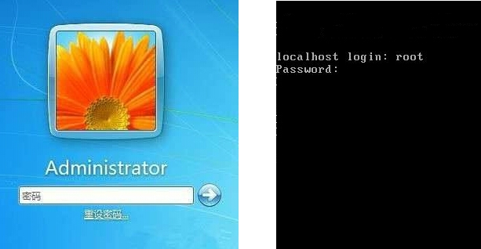
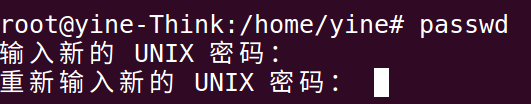
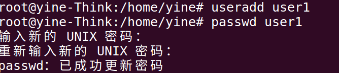
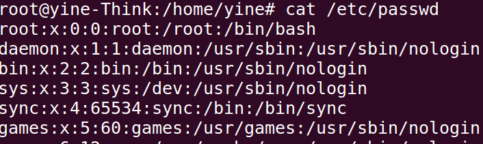
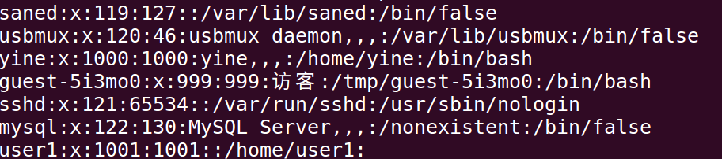
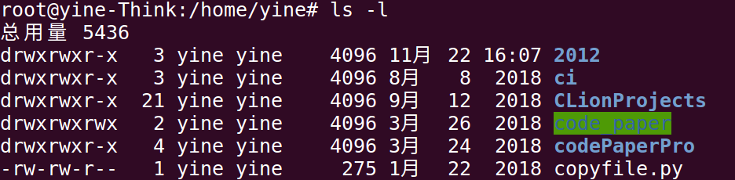
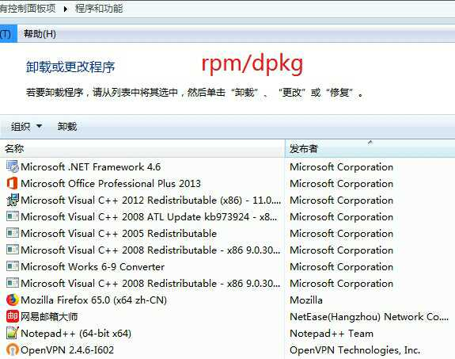
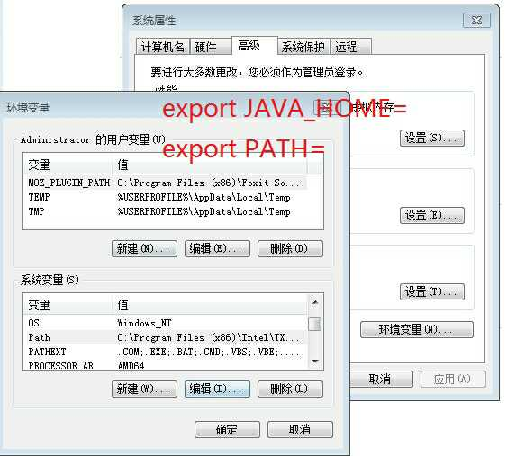
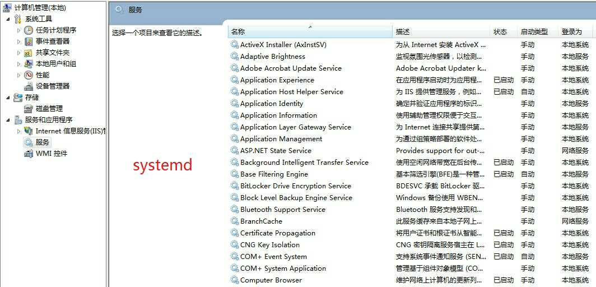
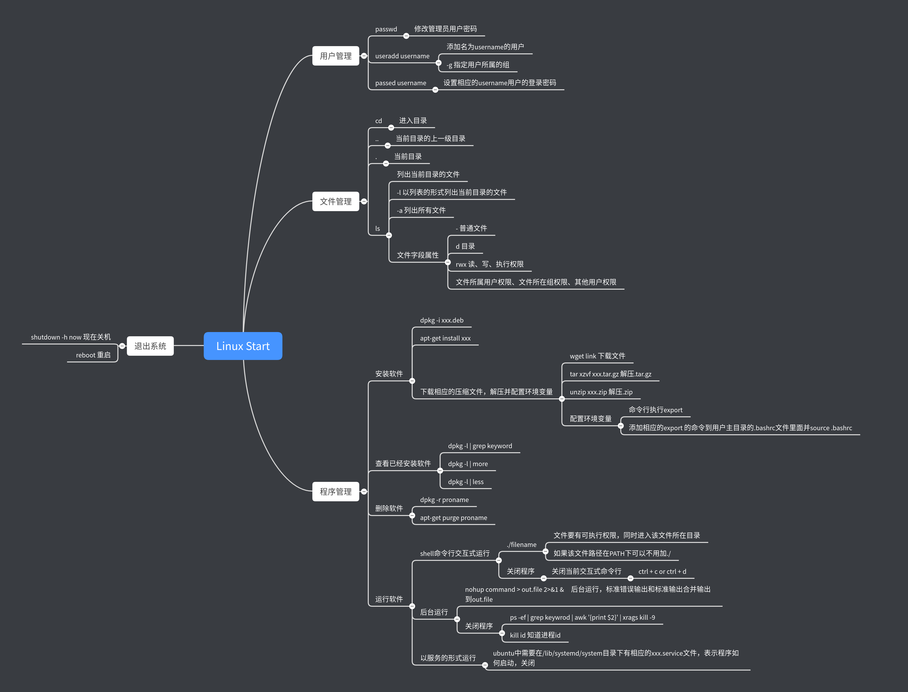

这是一个回归的任务（怎么做？）
主要是对使用Linux，常用命令的一些介绍，更多的命令还是需要查看文档
内容主要参考极客时间课程：趣谈Linux操作系统第4章
所以也算是自己课后的总结
想象一下你平时使用电脑的场景，是不是首先打开电脑，然后选择相应的用户进行登录，登录之后肯需要查看电脑上存在的文件，然后如果要完成一个任务，需要安装特定的软件（如果软件已经安装好了，也可以不用安装），之后需要运行软件程序，运行完了完成任务之后，你需要关闭电脑下班回去了（当然你可能一个任务接一个任务还在加班。cry）。类比刚开始使用Windows的时候，需要经常涉及到的操作和相关的命令进行解释。主要内容是分为以下几点：
将这前后的操作命令串起来几乎就是我们平时使用电脑时的场景。所以本blog的内容主要分别介绍这几个操作相关的命令使用。OK starting

如上图所示，在首先登录系统的时候，系统默认有一个管理员账户，windows下叫Administrator，Linux下叫Root。管理员有系统的最高权限。
对于管理员账户的密码是在安装操作系统的时候指定的。如果要修改密码，在Windows中可以通过控制面板来完成，然而在Linux中一切皆为命令操作，所以用于修改root用户的命令为：passwd

在操作系统中除了以管理员账户登录，还可以创建登录其他的普通的用户。创建其他的用户在windows中都可以在控制面板完成，在Linux中同样使用相应的命令创建用户：useradd
添加一个名为user1的用户
useradd user1
使用上面的命令创建用户时，不会弹出输入密码的提示框，需要在调用passwd命令设置其密码：
设置user1用户的密码
passwd user1
执行结果：

用户在创建的时候，有一个组的概念，如果没有加说明指定属于那个组，则，会默认创建一个同名的组。在useradd命令创建创建用户的时候可以使用 -g 来指定用户属于那个组。
在Linux中运行的模式是“命令行+文件”的模式。对于用户管理来说，通过命名创建的用户，实际上放在了/etc/passwd 文件里。组的信息放在了/etc/group文件里面。
可以通过cat命名查看对于文件的内容
cat /etc/passwd
root:x:0:0:root:/root:/bin/bash
......
yine:x:1000:1000::/home/yine:/bin/bash
......
user1:x:1001:1001::/home/user1:


在/etc/passwd文件中，
在登录系统之后，可以在文件系统里面看一看有什么文件了。在linux和windows中的文件系统都是用文件夹把文件组织起来形成一个树形结构。使用命令行浏览文件常用的命令有：
１． cd : change directory 表示切换目录
２． 特殊目录：. 表示当前目录，.. 表示上一级目录。常用来表示相对目录
３． ls : 列出当前目录下的所有文件，常用的是加一个“-ｌ” 参数，表示用列表的方式列出文件。
ls -l
总用量 5436
drwxrwxr-x 3 yine yine 4096 11月 22 16:07 2012
drwxrwxr-x 3 yine yine 4096 8月 8 2018 ci
drwxrwxr-x 21 yine yine 4096 9月 12 2018 CLionProjects
drwxrwxrwx 2 yine yine 4096 3月 26 2018 code_paper
drwxrwxr-x 4 yine yine 4096 3月 24 2018 codePaperPro
-rw-rw-r-- 1 yine yine 275 1月 22 2018 copyfile.py
drwxrwxr-x 2 yine yine 4096 11月 22 22:19 dockerFile
-rw-r--r-- 1 yine yine 8980 1月 12 2018 examples.desktop

文件字段解读：
对于安装软件，在windows中一般都是在网上下载installer然后在进行安装的。最直接的方式是下载exe然后直接运行。在Linux中也有类似的方式只不过下载的包为rpm（centos）或者deb（ubuntu）。在linux中没有双击安装一说，同样使用的也是命令:
centos下安装程序，-i表示install
rpm -i xxx.rpm
ubuntu下安装,-i表示install
dpkg -i XXX.deb
在windows中有控制面板的程序与功能界面可以管理安装和删除软件：

在linux中同样通过命令进行程序的安装管理：
centos
查询安装的软件列表，q表示quray, a表示all
rpm -qa
ubuntu
查询安装的软件列表，l表示list
dpkg -l
直接运行上面的命名会输出一长串内容，可能会很难找到需要安装的软件，如果知道安装的软件包含某个关键词，这时可以使用linux中常用的搜索工具命令grep（支持正则表达式匹配）.
centos 查找是否有jdk关键字的程序
rpm -qa | grep jdk
ubuntu
dpkg -l | grep jdk
| 是管道（进程通信方式的一种），用于连接两个程序，前面 rpm -qa 的输出就放进管道里面，然后作为 grep 的输入，grep 将在里面进行搜索带关键词 jdk 的行，并且输出出来。
linux中使用管道加grep是很常用的一种模式。
如果不知道关键词，可以使用rpm -qa | more和rpm -qa | less这两个命令，它们可以将很长的结果分页展示出来。这样就可以一个个来找了。利用管道的机制。more 是分页后只能往后翻页，翻到最后一页自动结束返回命令行，less 是往前往后都能翻页，需要输入 q 返回命令行，q 就是 quit。
proname 表示要删除的软件的名字
rpm -e proname #centos e表示erase
dpkg -r proname #ubuntu r表示remove
上面是在没有软件管家的情况，如果有了软件管家，就可以直接通过软件管家进行搜索安装了。在linux下也有自己的软件管家，centos是yum, ubuntu 是apt-get,经常使用的方式有
centos
yum search proname #搜索相应的proname的程序
yum install proname #安装相应的proname的程序
yum erase proname #删除卸载相应的proname程序
ubuntu
apt-cache search proname #搜索相应的proname的程序
apt-get install proname #安装相应的proname的程序
apt-get purge proname #删除卸载相应的proname程序
在后面新的版本的ubuntu中apt = apt-get ,apt-cahe, apt-config
Windows 上的软件管家会有一个统一的服务端，来保存这些软件，但是我们不知道服务端在哪里。而 Linux 允许我们配置从哪里下载这些软件的，地点就在配置文件里面。
centos的配置文件在:/etc/yum.rep.os.d/CentOS-Base.repo
ubuntu的配置文件在:/etc/apt/sources.list
其实无论是先下载再安装，还是通过软件管家进行安装，都是下载一些文件，然后将这些文件放在某个路径下，然后在相应的配置文件中配置一下。 例如，在 Windows 里面，最终会变成 C:\Program Files 下面的一个文件夹以及注册表里面的一些配置。对应 Linux 里面会放的更散一点。例如，主执行文件会放在 /usr/bin 或者 /usr/sbin 下面，其他的库文件会放在 /var 下面，配置文件会放在 /etc 下面。
所以还有一种最简单粗暴的方式，将压缩好的安装文件直接下载下来，然后解压缩成为一个完整的路径，同时在配置相应的环境变量 。
在linux下 wget 命令后面跟上一个链接，就能直接下载相应的文件了。
linux默认的压缩文件的格式为tar.gz相应的解压为：
tar xvzf xxx.tar.gz
如果文件的压缩格式是.zip。则需要安装相应的zip文件的解压和压缩包的程序:
apt install zip unzip
在解压好相应的文件后，经常需要配置环境变量，如在安装jdk的时候。

在linux下配置环境变量，通过export 命令实现,如：
export JAVA_HOME=/root/jdk-xxx_linxu-x64
export PATH=$JAVA_HOME/bin:$PATH
但是export只在当前命令行起作用。为了可以是一次配置永久管用，可以通过将相应的命令添加到当前用户的默认工作目录下的.bashrc文件里面。以点开头的文件要ls -la才能看到。因为每次登录用户时，该文件都会运行一遍。也可以通过source .bashrc手动执行。
在linux中运行一个程序不像windows一样是双击exe的。在linux中只有只有有x执行权限的文件才能执行，进入到在可执行文件所在的目录下通过”./filename“就可以运行该程序了， 如果该文件的路径在PATH目录下，不用加”./“,直接输入文件名就可以运行了。
通过shell交互式运行的方式，当当前的交互式命令行退出了，程序就停止运行了
程序后台运行时，使用nohup 命令，表示不挂起，即使当前的命令行退出，程序仍在运行。此时程序不能一直霸占交互式命令行，需要加一个 & ,表示后台运行，同时对于对于后台运行的程序，其输出原来是打印在交互式命令行里面，在后台运行时常见的方式是输出到文件。
最终命令的一般形式为:
nohup command > out.file 2>&1 &
“１” 表示文件描述符１，即标准输出，“２”文件描述２，即为标准错误输出，“2>&1”表示标准错误输出和标准输出合并了，最终输出到out.file里面
ps -ef | grep keyword | awk '{print $2}' | xargs kill -9
ps -ef: 可以单独执行，表示列出所有正在运行的程序，grep 通过keyword搜索到在运行的程序；awk,可以灵活地处理文本，awk ‘{print $2}’ 是指获取第二列的内容，即运行程序的id; 然后通过xargs传递给kill -9, 就是发给这个程序一个信号，让它关闭。 如果已经知道该程序的id，也可以直接使用kill id,关闭该程序。
在windows中还有一种程序，成为服务，在系统启动的时候就存在，可以控制面板的服务管理启动和关闭相应的服务。

在linux下也有相应的以服务的方式运行程序。例如，在ubuntu中，可以通过apt install mysql-server的方式安装mysql,然后通过命令systemctl start mysql 启动mysql, 通过systemctl enable mysql 设置开机启动。之所以成为服务并能开机启动，是因为在“/lib/systemd/system”目录下会创建一个XXX.service的文件，里面配置了如何启动，如何关闭。
linux,关机和重启命令为（可用于装逼命令）
shutdown -h now #现在关机
reboot #重启
